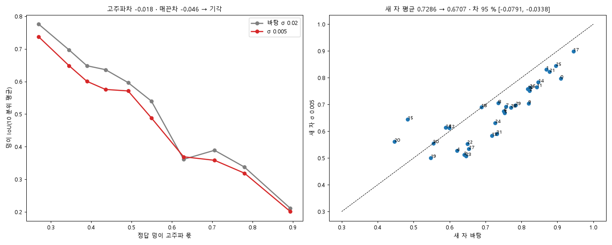

실험 m2_tr0312_h065_흔들기
목표 G1.2 view 모음 → 파츠별 CAD code(CadQuery · 그 전 「3 면도 → 파츠별 CAD」 · 지금 M2 는 위 · 앞 · 옆 고정 세 장만 받음 → 아무 각도 N 장으로 바꿀 것 · 11-20) · G1 첫 제품 — 피규어 · 메카 사진 여러 장 + 치수 → 숨은선 3 면도 + 파츠별 CAD · G0 임의의 이미지 → CAD 코드 · 빌린 가정 5: 정사영 · 시점앎 · 흰바탕 · 렌더화풍 · 정답3D · 갚는 계획: 진단 · 정답 만들기 — 고주파 놓침 원인이 정해지면 그 고침으로 CAD code 정답 변환(m2 학습 · 비교는 그 뒤 카드) · 목표 시험지 값: 안 잼 (!)
바탕 맞춤(배관2 메시 · 출발 16 + 표면 F + R7 + R4 + R5)에서 과녁 표면 곁 흔들기 σ 만 0.02 → 0.005 로 줄이면 정답 고주파 칸의 맞음이 오르나?
| 가설 | 주장 | 결과 | 근거 |
|---|---|---|---|
| m2-H65 | 흔들기 σ 가 얇은 곳의 「안」 가르침을 지워 고주파를 놓친다 — σ 를 줄이면 고주파 칸 맞음이 오른다 | 기각 | 연습 앞 32 메시 · 덩이 3,146 · 고주파 위 25 % 덩이 IoU 0.3093 → 0.2908(차 −0.0185 < 0.03) · 매끈 아래 25 % 0.7168 → 0.6710(−0.0458) · 새 자 0.7286 → 0.6707 · 하네스 실패 두 팔 0 · CAD 안 끝남 0 · 0 · 조용한 실패 0 · 잼에서 셈: 차이의 차이(고주파차 − 매끈차) +0.027 · 비율 고주파 −6.0 % · 매끈 −6.4 % · 참고 흔들기_메시.json σ 0.01 R 위/아래 0.665 배 |
결정 표(돌리기 전에 정함)
- 만약 지지
다음 바탕을 σ 0.005 로 바꾸고 H_a(고주파 잔차 몸) 카드로 - 만약 기각
다음 흔들기는 원인 아님 — 과녁 점 수 · 칸당 점 몫(H_C1 의 다른 갈래) 또는 어휘(얇은 판 · S6)로
분석
한 줄로
물음: 정답 변환 맞춤에서 과녁 표면 곁 점의 흔들기 σ 만 0.02 → 0.005 로 줄이면 정답 고주파 칸의 맞음이 오르나?
답: 아니다. 고주파 위 25 % 덩이 IoU 는 0.3093 → 0.2908(차 −0.0185)로 오히려 조금 내려갔고, 매끈 칸은 0.7168 → 0.6710(−0.0458)으로 더 내려갔다. 고주파차가 기각선 0.03 아래라 m2-H65 기각.
왜 이 실험을 했나
사용자 가설은 「고주파 부분에서 학습을 못한다」였다. 물체를 8³ 덩이로 나눠 보니 정답 고주파 위 25 % 덩이 IoU 는 0.309, 아래 25 % 는 0.717 이었고(30/32 물체), 볼록 껍질보다도 고주파 칸에서 졌다(대조 규칙상 「맞춤 탓」 쪽 · 원인은 짐작). 원인 셈에서 맞춤이 받는 「안」 이름표 과녁 점이 고주파 덩이에서 매끈 덩이의 0.43 배뿐이었다(H_C1). 흔들기 σ 0.02 가 얇은 곳 두께보다 커서 「안」 점이 밖으로 튀어 나간다고 보았고, 공짜 확인에서 σ 0.005 로 줄이면 그 배가 0.809 로 오르는 것을 보았다. 그래서 σ 하나만 바꿔 맞춤을 다시 돌렸다.
바꾼 것 하나
_과녁점2 의 표면 곁 점 흔들기 σ 0.02 → 0.005. 출발 씨 101 ~ 116 · 묶음 8 · 표면 F 고르기 · R7 · R4 · R5 · 끝 단계 상한 6 GB 는 바탕(배관2 메시 팔)과 같다.
결과

| 바탕 σ 0.02 | σ 0.005 | 차 | 문턱 | |
|---|---|---|---|---|
| 고주파 위 25 % 덩이 IoU | 0.3093 | 0.2908 | −0.0185 | 지지 ≥ 0.10 · 기각 < 0.03 → 기각 |
| 매끈 아래 25 % 덩이 IoU | 0.7168 | 0.6710 | −0.0458 | 지지에 ≥ −0.01 필요 |
| 새 자 F@0.02_정답틀 평균 | 0.7286 | 0.6707 | −0.0579 [−0.0791, −0.0338] | 같이 적음 |
덩이 3,146 개(정답 안 · 밖이 섞인 8³ 덩이). 하네스 실패 두 팔 0, CAD 안 끝남 0 · 0, 조용한 실패 0. 바탕 위 25 % 0.3093 은 옛 진단 셈 0.309 와 같다(같은 자). 물체 재표집 구간(참고): 고주파차 [−0.0444, 0.0030], 매끈차 [−0.0730, −0.0240].
왜 이렇게 나왔나
확인한 것
- 과녁의 「안」 점 몫(R)은 σ 를 줄이면 고주파 칸에서 0.43 → 0.81 배로 오른다(공짜 확인 54933d14 · 과녁 점에서 센 값). 과녁의 「안」 점 몫은 늘었는데, σ 0.005 한 값 · 한 번 돌림에서 고주파 칸은 오르지 않았다. 맞춤 loss 가 그 덩이에 실제로 더 무게를 줬는지는 재지 않았다.
- σ 를 줄이자 매끈 칸과 새 자가 함께 내려갔다(새 자 구간 전체가 0 아래). 비율로는 고주파 −6.0 % · 매끈 −6.4 % 로 거의 같고, 차이의 차이는 고주파 쪽이 +0.027 덜 잃었다. 0.63 분위에서는 σ 0.005 가 바탕 위다.
- R7 후보 시간 상한(60 초)에 걸린 후보는 두 팔 모두 0(「시간 상한」 은 하네스 실패로 세고, 하네스 실패 두 팔 0). GPU 0 을 게임과 같이 쓴 것은 걸음 수 · 씨를 바꾸지 않는다.
- 이 결과는 카드가 미리 적은 섞임(「σ 를 줄이면 두꺼운 곳 「밖」 가르침도 줄 수 있음」) 꼴 그대로다. 판정식에는 전체 악화 때의 무효 줄이 없어 기각은 판정식대로지만, 「σ 를 줄인 부작용(전반 악화)이 고주파 쪽 효과를 가렸다」 는 해석은 이 실험으로 배제하지 못한다.
짐작 (아직 확인 안 함)
- σ 0.005 는 표면 곁 점이 표면에 붙어 있어, 표면에서 조금 떨어진 곳의 안 · 밖 가르침이 줄어든다. 그 때문에 맞춤이 표면 위치를 덜 정확히 잡아 매끈 칸까지 내려갔을 수 있다. 세지 않았다.
- 고주파 칸이 안 오르는 것은 가르침이 아니라 표현 쪽(몸 수 · 어휘가 얇은 판 · 가는 줄을 못 그림)일 수 있다. 세지 않았다.
한계
- 연습 앞 32 · 메시 입력만 · 한 번씩 돌림. 과녁이 달라지면 출발 고르기 · R7 경로도 바뀐다(카드 섞임).
- 덩이 IoU 는 64³(칸 0.019) 해상도라 σ 0.005 보다 거칠다.
- GPU 0 은 같은 시각 게임과 같이 쓰여 느렸다. 걸음 수 · 씨는 같고 R7 시간 상한 걸림은 두 팔 0 이지만, GPU 비결정성까지 같다고 확인하지는 않았다.
- 각 팔을 한 번씩만 돌렸다. 같은 설정 두 번의 돌림 간 잡음은 재지 않았다 — 구간은 물체 재표집뿐이다.
- 바탕 팔은 물체 1 · 13 · 18 · 22 의 끝 단계를 6 GB 로 「다시 돎」 했고, σ 팔은 처음부터 6 GB 로 돌았다. 두 팔의 이력이 다르다.
- σ 는 0.005 하나만 썼다(공짜 확인에서는 σ 0.01 도 R 0.665 배로 셌다).
- 물체별로 σ 팔이 나은 6 개(12 · 15 · 16 · 18 · 20 · 30)는 대부분 바탕 점수가 낮은 물체다(평균으로 돌아오는 효과일 수 있음).
- 판정 스크립트를 처음 돌릴 때 관문 도장이 빠져 있어(제 실수) 도장을 넣고 같은 셈을 다시 돌렸다. 숫자는 두 번 다 같다.
배운 것과 다음
σ 0.005 로 과녁 「안」 점 몫을 늘려도 고주파 칸은 안 올랐고 맞춤 전체가 나빠졌다. 흔들기를 줄이는 것은 고칠 길이 아니다. 다만 「안」 가르침 양이 원인 중 하나인지는 전반 악화에 가려 닫히지 않았다. 바탕은 σ 0.02 그대로 둔다.
카드 결정(기각)대로 다음 후보:
- 과녁 점 수 · 칸당 점 몫(H_C1 의 다른 갈래).
- 어휘 — 얇은 판 · S6(H_b).
- (카드 결정 밖 제안) 두 단계(H_a: 고주파 칸 잔차 몸) — 같은 몸 예산 대조 필요.
검토 (11-26 맥락 없는 서브 에이전트 · 카드 · 잼 · 보고 · 결과_pc.png · 판정312.py · 흔들기배관2.py 만 봄)
「기각」 은 카드 판정식대로 공정하다(고주파차 −0.0185 < 0.03 · 물체 재표집 구간 위끝 +0.003 도 0.03 아래). 숫자는 잼 · 그림과 맞고, 빈 입체로 떨어진 물체는 두 팔 0 개(검토자가 mtime 조건을 다시 돌림). 지적은 결론의 세기에 있었다.
고친 줄 (검토 반영)
- 「결과 숫자에 영향 없음」 단정 → R7 시간 상한 걸림 두 팔 0 을 세어 적고, GPU 비결정성은 한계로.
- 결과가 카드 섞임 꼴(전반 악화 · 비율로 같은 하락)이라 「부작용이 고주파 효과를 가렸다」 를 배제 못 함 → 확인한 것에 적음.
- 「주된 원인이라는 주장은 깨졌다」 · 「흔들기는 원인이 아니다」 → σ 0.005 한 값 · 한 번에서 안 올랐다까지로 낮춤.
- 한계 셋 더함: 돌림 간 잡음 안 잼 · 바탕 4 물체 다시 돎 · σ 하나.
- 「가르침의 양」 → 「과녁의 「안」 점 몫」.
- 「맞춤 탓」 → 대조 규칙상 · 원인은 짐작.
- σ 팔이 나은 6 물체는 바탕 낮은 물체(평균 회귀 가능).
- 잼에 빈 입체 수 칸 · 0.309 비교 참/거짓 칸이 없음 — 고치지 않음(판정 뒤 스크립트를 바꾸지 않음 · 값은 여기 적음: 빈 입체 0 · 0.3093 ≈ 0.309 참).
- H_a 는 카드 결정 밖 제안으로 표시.